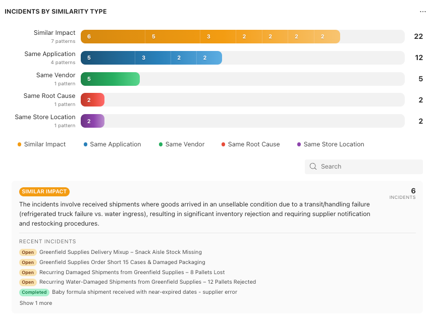
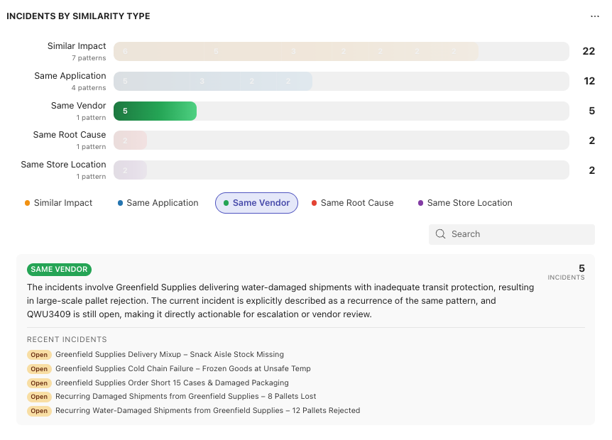

Five tickets about damaged shipments from the same supplier.
Three checkout failures tied to the same application. Two store locations
reporting the same issue two weeks apart. Individually, they look like isolated
problems. Together,
they're a pattern — and patterns are where the real operational risk lives. The
problem is that most teams never see them.
Why Patterns Stay Hidden
It's not a people problem. Your team is doing exactly what
they're supposed to do — logging tickets, resolving issues, closing them out.
But when you're managing dozens of incidents a week, nobody has the bandwidth to
cross-reference tickets manually and ask "wait, have we seen this before?"
Tags help, but only if everyone uses them consistently.
Filters help, but only if you know what to look for. Most of the time, the
pattern only becomes visible in hindsight — after the third supplier failure,
after the fifth checkout error, after someone finally says "this keeps
happening."
By then, the damage is already done.
Introducing Recurrences
Resolve now automatically analyzes your incidents and groups
them into similarity clusters — no manual tagging, no configuration, no
dashboard to maintain. Using AI, Resolve identifies not just that incidents are
similar, but how they're similar. That distinction matters more
than it sounds.

A cluster of incidents sharing the same root cause calls for a
technical fix. A cluster tied to the same vendor calls for a conversation with
your supplier — or a new one. A cluster concentrated in the same store location
points to something environmental or procedural that no amount of engineering
will solve.

Resolve surfaces all of this automatically, so your team
spends less time connecting dots and more time acting on what they find.
Recurrences that actually mean something
When Resolve groups incidents, it tells you exactly why they
belong together — and the type of similarity determines what you should do about
it.
- Similar Impact — incidents that affect operations in the
same way, even if the surface cause looks different. Useful for
understanding the business cost of a recurring pattern before it
escalates.
- Same Application — multiple failures traced back to the
same system or integration. A signal that something deeper needs attention
beyond individual fixes.
- Same Vendor — incidents linked to the same supplier or
external provider. The kind of pattern that turns a support conversation
into a procurement decision.
- Same Root Cause — different symptoms, same underlying
problem. Often the most actionable cluster — fix it once, close multiple
failure modes.
- Same Store Location — for distributed operations, incidents
concentrated in a specific location often reveal process, staffing, or
infrastructure issues that won't show up any other way.
These are just a few examples. Resolve detects similarity
patterns across a wide range of categories tailored to your industry — from
equipment and infrastructure to processes and external dependencies. Each
cluster comes with an AI-generated description explaining
what the incidents have in common and a list of the most recent cases — so you
always have the context you need to act.
From Data to Decisions
Knowing you have a pattern is only valuable if it changes what
you do next.
When a manager sees that six incidents share the same vendor
and the same type of impact, that's not just an operational insight — it's
evidence. Evidence to escalate a supplier relationship, renegotiate contract
terms, or make the case internally for switching vendors. Evidence that's
objective, timestamped, and built from your own operational data.
That's the shift Incident Similarity enables — from reactive
firefighting to informed decision-making. Your team was already generating the
data. Resolve just makes it visible.
Incident Similarity is available now for all Resolve
Business plan users. Open your dashboard and see what your
incidents
have been trying to tell you.